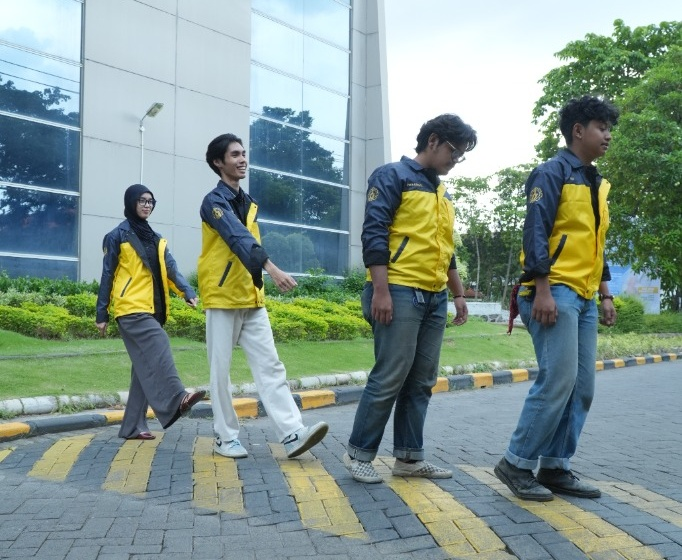

Biro Keorganisasian mengawal denyut efektivitas struktural organisasi di BEM FTEIC ITS. Dengan implementasi kerangka kerja Objective and Key Results (OKR), audit proposal, supervisi lapangan, hingga evaluasi LPJ berkala, tim ini menjamin setiap program kerja terealisasi dengan tata kelola unggul dan dampak yang terukur.
Bukan sekadar mengejar terlaksananya kegiatan, kerangka kerja OKR membantu setiap departemen di BEM FTEIC ITS memahami esensi tujuan, fokus pada dampak nyata, dan memiliki tolok ukur keberhasilan yang transparan.
Mendiskusikan rancangan awal proker bersama panitia pelaksana untuk memastikan relevansi kegiatan, kelayakan timeline, dan keselarasan visi kabinet.
Hadir langsung saat persiapan dan pelaksanaan acara, siap menjadi mitra diskusi ketika panitia menemui hambatan teknis yang memerlukan jalan keluar cepat.
Meninjau capaian target bersama panitia secara terbuka, merayakan keberhasilan yang diraih, serta memetakan aspek yang masih bisa dioptimalkan.
Menyusun dokumentasi pembelajaran dan rekomendasi berharga agar kepanitiaan periode berikutnya bisa belajar dari pengalaman dan melangkah lebih matang.
Biro Keorganisasian menemani setiap tahapan program kerja dengan prinsip kemitraan yang suportif agar output kegiatan berkualitas dan membawa dampak positif.
Duduk bersama merapikan timeline, menyepakati tolok ukur keberhasilan (Key Results), serta mengantisipasi potensi kendala teknis sebelum kegiatan dimulai.
Memantau kelancaran teknis di lokasi, memastikan koordinasi tim solid, dan mendampingi panitia agar acara berjalan tertib, aman, dan nyaman bagi peserta.
Menyelesaikan pertanggungjawaban kegiatan secara rapi, merefleksikan ketercapaian target, dan mengarsipkan catatan evaluasi untuk kepengurusan selanjutnya.
Biro Keorganisasian dan Biro Personalia di bawah payung BPS bekerja saling melengkapi bak dua sisi mata uang: